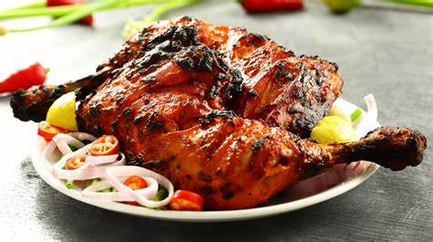

TANDOORI CHICKEN:
Description:
Try this authentic tandoori chicken that's marinated in yogurt and spices, then cooked on the grill instead of a clay oven so you can make it at home. Serve with long-grain basmati rice, grilled veggies, roasted corn on the cob, and a cucumber salad.
The Ingredients are:
- 2 pounds chicken, cut into pieces
- 1 medium lemon, juiced
- 1 teaspoon salt
- 1 ¼ cups plain yogurt
- ½ medium onion, finely chopped
- 1 clove garlic, minced
- 2 teaspoons garam masala
- 1 teaspoon grated fresh ginger root
- 1 teaspoon cayenne pepper
- 1 teaspoon cayenne pepper
- 1 teaspoon yellow food coloring (Optional)
- 2 teaspoons finely chopped cilantro
- 1 medium lemon, cut into wedges
Steps:
Remove and discard skin from chicken pieces. Cut slits into meat and place into a shallow dish. Season chicken on both sides with lemon juice and salt. Let sit for 20 minutes.
Mix yogurt, onion, garlic, garam masala, ginger, and cayenne pepper together in a medium bowl until smooth, then stir in food coloring. Spread yogurt mixture over chicken, cover, and refrigerate for 6 to 24 hours (the longer the better).
When ready to cook, preheat an outdoor grill for medium-high heat and lightly oil the grate. Remove chicken from marinade. Discard remaining marinade.
Cook chicken on the preheated grill until no longer pink and the juices run clear. An instant-read thermometer inserted near the bone should read 165 degrees F (74 degrees C). Garnish with cilantro and lemon wedges.